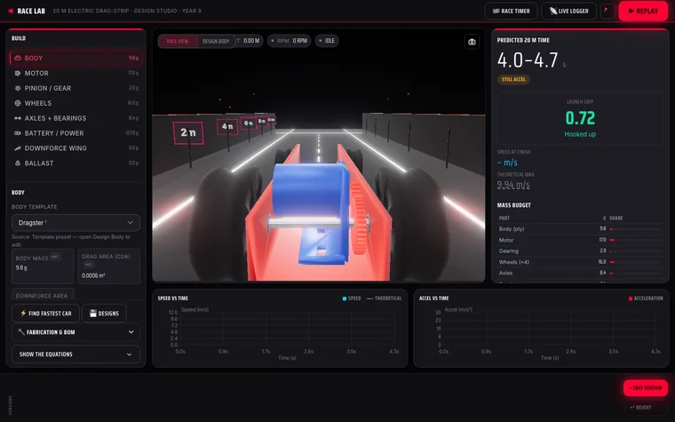

← All projects
Race Lab
Year 9 students design an electric drag racer on screen, predict its race time, then build and race the real car.
Designed and built independently, outside my school roles. Demonstrations use made-up data and sample AI responses.


The classroom problem
Students often build first and think later. Designing on screen with a physics prediction makes them reason about mass, gearing and drag before they cut anything.
What it does
- Design the car in 3D, choosing the body, motor, gearing, wheels and battery.
- See a physics-based prediction of the race time, with speed and acceleration graphs.
- Get the parts list for building the real car.
- Race it, then compare the result with the prediction.
How it was built
There is no AI inside the app. I designed it and built it with AI coding assistants.
The teacher’s role: Use the real race result to revisit students’ choices about mass, gearing and drag.